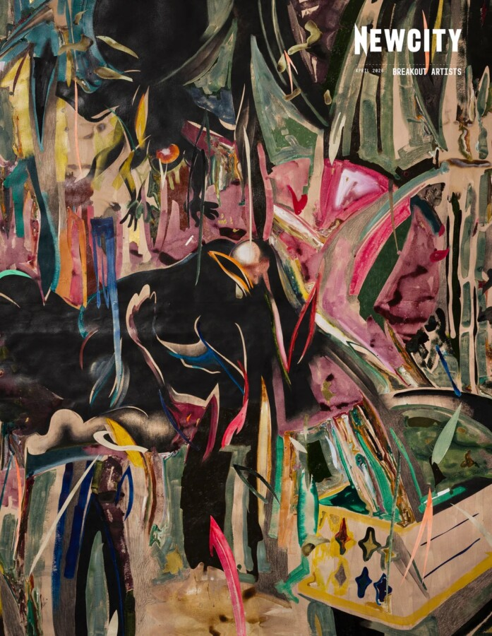

Newcity Breakout Artists
Join us for this year’s Newcity Breakout Artists Exhibition, an annual event presented in partnership with Newcity.
Chicago Artists Coalition is pleased to announce our partnership with Newcity, in which CAC will host a centerpiece exhibition of this year’s Newcity Breakout Artists. The exhibition will have an opening reception on Wednesday, April 8, 2026 from 5-9pm. This event is free and open to the public, hosted at our space on Hubbard Street. The exhibition will be on view until and have a closing reception on April 23, 2026.
Exhibiting artists: Hai-Wen Lin, Mauricio López F. (Current CAC Resident), Isabelle Frances McGuire, Mariana Noreña G, Monika Plioplyte, Nick Raffel, TaitaixTina, Noelia Towers, Carina Yepez, and Sangwoo Yoo (Current CAC Resident)